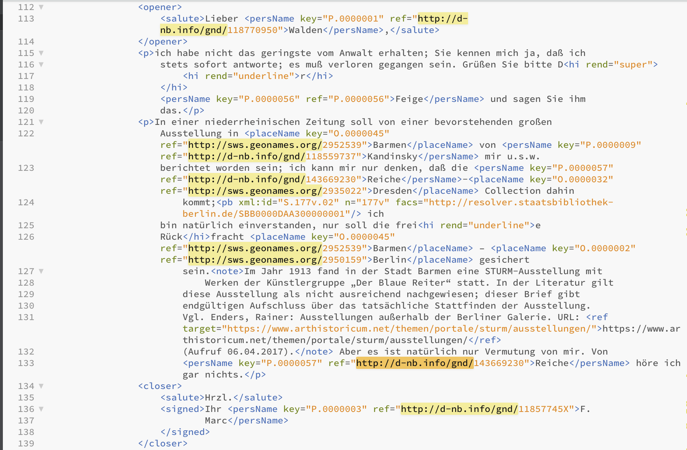
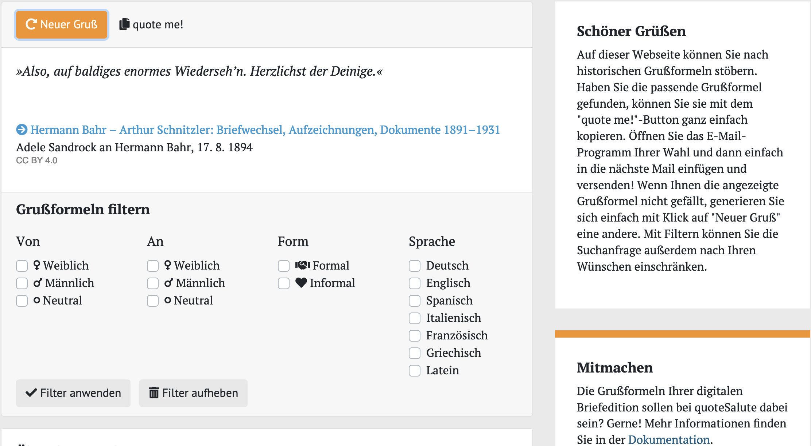

9 Ausblick
Wenn Sie die von Ihnen erstellten Strukturierungen von Brief Nr. 8 bzw. Nr. 9 von Franz Marc an Herwarth Walden und die identifizierten Entitäten mit denjenigen in den XML-Dateien der STURM-Editor:innen vergleichen, ergeben sich sicher einige Unterschiede. Ein zentraler ist sicher, dass sich die Herausgeber:innen bei ihrer Strukturierung an ein Schema gehalten haben, das im Bereich der Texteditionen Standard ist, TEI XML, und das kann zahlreiche Vorteile haben. So können Sie beispielsweise die im vorherigen Kapitel durchgeführten Abfragen nach der Grußformel durchführen, ohne sich Gedanken darüber machen zu müssen, ob sich die Benennung des Tags auf halber Strecke ändert. Und wenn Sie sich während der Forschungsarbeit dafür entscheiden würden, anstatt Grußformeln besser die Anrede zu untersuchen, oder aber das Korpus auf die Briefe von Jacoba van Heemskerck auszuweiten, könnten wir dies mit wenigen Änderungen in unseren Abfragen machen, weil auch die Anrede mit einem einheitlichen Tag codiert ist; würden wir die Quellen nur über die Webseite lesen und unsere Auszählungen von Hand machen, würde unsere Arbeit mit dem Hinzufügen neuer Dokumente von vorne beginnen.
Das Erstellen von standardisierten Daten mithilfe eines Schemas bzw. bestimmter Richtlinien ermöglicht es auch, verschiedenen Datensätze miteinander zu kombinieren oder mit weiteren Daten anzureichern. Bei einem Blick in die Briefe, auf der Webseite oder in der XML-Datei, wird ersichtlich, dass Entitäten wie Personen oder Orte nicht nur als solche markiert und projektintern verlinkt, sondern auch mit weiteren Normdaten verbunden wurden, beispielsweise mit dem dazugehörigen Eintrag in der GND, der Gemeinsamen Normdatei der Deutschen Nationalbibliothek, oder in Geonames, einer Datenbank für geographische Daten.

Wenn Sie den Link zu Kandinski oder zu Berlin anklicken, erhalten Sie auf den Seiten der GND bzw. Geonames zahlreiche zusätzliche Informationen zur Person bzw. zum Ort, unter anderem Lebensdaten bzw. Geokoordinaten. Wenn Sie nun beispielsweise wissen wollten, welche Orte in den Briefen Franz Marcs genannt werden, könnten Sie diese nicht nur mithilfe des Tag-Paars <placeName>-</placeName> extrahieren, sondern mit den dazugehörigen Geokoordinaten anreichern und sich auf einer Karte anzeigen lassen. Für solche Vorgänge reicht ein kurzes (aber nicht unbedingt schnell erstelltes …) Skript, das sich auf weitere Dokumente ausweiten lässt – ob Sie nur die Orte in den Briefen Franz Marcs oder auch in denen Jacoba van Heemskercks extrahieren und visualisieren wollen, spielt mit Blick auf die Rechenzeit des Skripts keine Rolle.
Das Erstellen von Datensätzen nach bestimmten Richtlinien, einerseits formal, andererseits auch mit Blick auf die FAIR-Prinzipien, bietet also viele Vorteile für die eigene Arbeit – so müssen beispielsweise Schemata zur Klassifizierung nicht von Neuem erfunden werden – ebenso wie für die Arbeit anderer – grundlegende Informationen können übernommen werden und es bleibt mehr Zeit für die inhaltliche Forschung.
Ein anschauliches Beispiel für die Weiternutzung von Daten ist das von Studierenden erstellte Projekt quoteSalute, eine Webseite, auf der Sie historische Grußformeln generieren lassen können, falls Ihnen beim Briefeschreiben der Standardgruß zu langweilig geworden ist. Das Projekt hat hierfür mehrere XML-codierte Briefkorpora, die alle als offen nutzbare Daten online verfügbar sind, genutzt, die Grußformeln extrahiert und angereichert. Die genaue Projektbeschreibung finden Sie hier.

Wie Sie sehen, können Sie sich Grüße nicht nur generieren lassen, sondern auch filtern, beispielsweise nach Geschlecht der Absender:innen bzw. der Adressat:innen oder nach Sprache. Sie können dies deswegen, weil die vorhandenen Codierungen der Textdateien im Projekt ausgeweitet und zum Beispiel um das Geschlecht der beteiligten Personen, sofern ersichtlich, ergänzt wurden. Der Code für das Projekt ist dabei offen auf einem GitHub-Repositorium zugänglich, und neue Korpora werden gerne aufgenommen.
Computergestütztes und computerbasiertes Arbeiten, das sollte dieser Guide vermitteln, vereinfacht, beschleunigt oder ermöglicht gar Prozesse, die wir für unsere historische Forschung nutzen können. Dabei gibt es mittlerweile zahlreiche Programme, die über eine graphische Oberfläche bedient werden können und die meisten Anforderungen aus geisteswissenschaftlicher Sicht erfüllen. Manche Analysen hingegen erfordern sehr spezifische Schritte oder viel Rechenkapazitäten, für die sich das Erlernen einer Programmiersprache lohnen kann. Gemeinsam ist beidem, dass es sowohl für das Formulieren einer interessanten Fragestellung, für die Auswahl der Datenbasis als auch für die Interpretation der Ergebnisse, die die Maschine liefert, informierte Expertise braucht – ein Programm zur Bestimmung der Autor:innenschaft eines unbekannten Textes rechnet unendlich lange, wenn es alle existierenden Texte mit einem unbekannten vergleichen muss; hier braucht es eine Eingrenzung auf eine Auswahl durch Literaturwissenschaftler:innen. Historische Forschung ist immer auch Analyse des Einzelfalls, das Partikularen, eines close readings; die Möglichkeit, den Blick mithilfe des Computers auszuweiten, kann in den meisten Fällen gewinnbringend in Betracht gezogen werden.